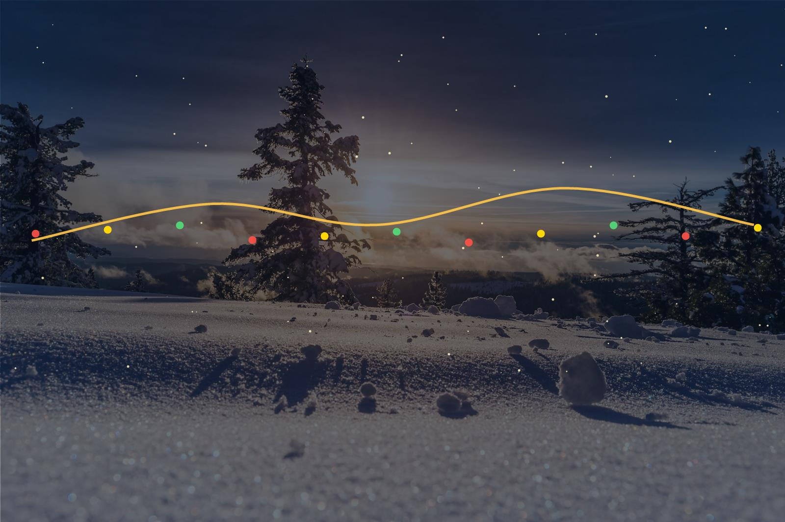

PARTNERED IN 2025
Leona Lewis: A Starry Night

For Leona Lewis's Christmas residency at the Voltaire inside the Venetian Resort in Las Vegas, Carol's Christmas Conifers created a layered, glamorous holiday environment throughout the space. The result was a polished, immersive setting that captured the energy of a world-class stage while elevating the entire experience.